Lecciones de circuitos eléctricos - Volumen IV
Capítulo 14
COMUNICACIÓN DIGITAL
- Introduction
- Networks and busses
- Data flow
- Electrical signal types
- Optical data communication
- Network topology
- Network protocols
- Practical considerations
Introduction
En el diseño de sistemas digitales grandes y complejos, a menudo es necesario que un dispositivo comunique información digital hacia y desde otros dispositivos. Una ventaja de la información digital es que tiende a ser mucho más resistente a los errores transmitidos e interpretados que la información simbolizada en un medio analógico. Esto explica la claridad de las conexiones telefónicas codificadas digitalmente, los discos compactos de audio y gran parte del entusiasmo de la comunidad de ingenieros por la tecnología de las comunicaciones digitales. Sin embargo, la comunicación digital tiene sus propios inconvenientes y existen multitud de formas diferentes e incompatibles en las que se puede enviar. Con suerte, este capítulo le ilustrará sobre los conceptos básicos de la comunicación digital, sus ventajas, desventajas y consideraciones prácticas.
Supongamos que nos dan la tarea de monitorear remotamente el nivel de un tanque de almacenamiento de agua. Nuestro trabajo es diseñar un sistema para medir el nivel de agua en el tanque y enviar esta información a un lugar distante para que otras personas puedan monitorearla. Medir el nivel del tanque es bastante fácil y se puede lograr con diferentes tipos de instrumentos, como interruptores de flotador, transmisores de presión, detectores de nivel ultrasónicos, sondas de capacitancia, galgas extensométricas o detectores de nivel por radar.
Para esta ilustración, usaremos un dispositivo de medición de nivel analógico con una señal de salida de 4-20 mA. 4 mA representa un nivel del tanque del 0%, 20 mA representa un nivel del tanque del 100% y cualquier valor entre 4 y 20 mA representa un nivel del tanque proporcionalmente entre 0% y 100%. Si quisiéramos, simplemente podríamos enviar esta señal de corriente analógica de 4 a 20 miliamperios a la ubicación de monitoreo remoto por medio de un par de cables de cobre, donde accionaría un medidor de panel de algún tipo, cuya escala estaba calibrada para reflejar la profundidad del agua en el tanque, en las unidades de medida que prefiriéramos.
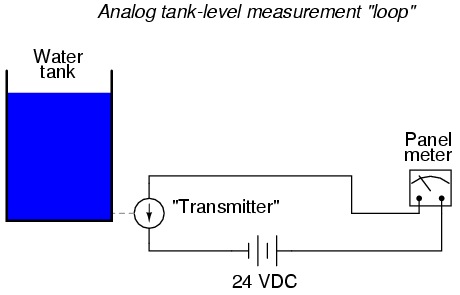
Este sistema de comunicación analógico sería simple y robusto. Para muchas aplicaciones, se adaptaría perfectamente a nuestras necesidades. Pero, no es elsolomanera de hacer el trabajo. Para explorar las técnicas digitales, exploraremos otros métodos de monitorear este tanque hipotético, aunque el método analógico que acabamos de describir podría ser el más práctico.
El sistema analógico, por más simple que sea, tiene sus limitaciones. Uno de ellos es el problema de la interferencia de la señal analógica. Dado que el nivel de agua del tanque está simbolizado por la magnitud de la corriente continua en el circuito, cualquier "ruido" en esta señal se interpretará como un cambio en el nivel del agua. Sin ruido, un gráfico de la señal actual a lo largo del tiempo para un nivel constante del tanque del 50 % se vería así:
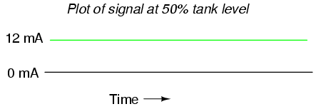
Si los cables de este circuito están dispuestos demasiado cerca de cables que transportan alimentación de CA de 60 Hz, por ejemplo, el acoplamiento inductivo y capacitivo puede crear una señal de "ruido" falsa que se introducirá en este circuito de CC. Aunque la baja impedancia de un bucle de 4-20 mA (250 Ω, normalmente) significa que los voltajes de ruido pequeños se cargan significativamente (y, por lo tanto, se atenúan por la ineficiencia del acoplamiento capacitivo/inductivo formado por los cables de alimentación), dicho ruido puede ser lo suficientemente significativo como para causar problemas de medición:
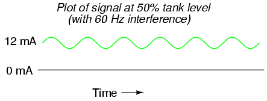
El ejemplo anterior es un poco exagerado, pero el concepto debe quedar claro:anyEl ruido eléctrico introducido en un sistema de medición analógico se interpretará como cambios en la cantidad medida. Una forma de combatir este problema es simbolizar el nivel de agua del tanque mediante una señal digital en lugar de una señal analógica. Podemos hacer esto de manera muy sencilla reemplazando el dispositivo transmisor analógico con un conjunto de interruptores de nivel de agua montados a diferentes alturas en el tanque:
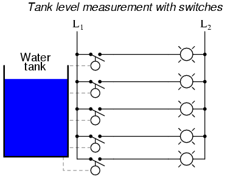
Cada uno de estos interruptores está cableado para cerrar un circuito, enviando corriente a lámparas individuales montadas en un panel en la ubicación de monitoreo. Cuando cada interruptor se cerraba, su respectiva lámpara se encendía y quien mirara el panel vería una representación de 5 lámparas del nivel del tanque.
Dado que cada circuito de lámpara es de naturaleza digital, ya sea 100%ono 100%off-- las interferencias eléctricas de otros cables a lo largo del recorrido tienen mucho menos efecto en la precisión de la medición en el extremo de monitoreo que en el caso de la señal analógica. AenormeSe necesitaría una cantidad de interferencia para hacer que una señal "apagada" se interpretara como una señal "encendida", o viceversa. La resistencia relativa a las interferencias eléctricas es una ventaja que disfrutan todas las formas de comunicación digital sobre la analógica.
Ahora que sabemos que las señales digitales son mucho más resistentes al error inducido por el "ruido", mejoremos este sistema de medición del nivel del tanque. Por ejemplo, podríamos aumentar la resolución de este sistema de medición de tanques agregando más interruptores, para una determinación más precisa del nivel del agua. Supongamos que instalamos 16 interruptores a lo largo de la altura del tanque en lugar de cinco. Esto mejoraría significativamente nuestra resolución de medición, pero a costa de aumentar considerablemente la cantidad de cables que deben tenderse entre el tanque y el lugar de monitoreo. Una forma de reducir este gasto de cableado sería utilizar un codificador de prioridad para tomar los 16 interruptores y generar un número binario que represente la misma información:
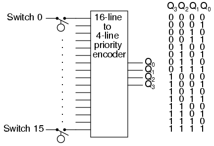
Ahora, sólo se necesitan 4 cables (más los cables de tierra y de alimentación necesarios) para comunicar la información, a diferencia de 16 cables (más los cables de tierra y de alimentación). En la ubicación de monitoreo, necesitaríamos algún tipo de dispositivo de visualización que pudiera aceptar datos binarios de 4 bits y generar una visualización fácil de leer para que la vea una persona. Para esta tarea se podría usar un decodificador, cableado para aceptar los datos de 4 bits como entrada y encender 1 de 16 lámparas de salida, o podríamos usar un circuito decodificador/controlador de 4 bits para controlar algún tipo de pantalla de dígitos numéricos.
Aún así, una resolución de 1/16 de la altura del tanque puede no ser suficiente para nuestra aplicación. Para resolver mejor el nivel del agua, necesitamos más bits en nuestra salida binaria. Podríamos agregar aún más interruptores, pero esto se vuelve poco práctico con bastante rapidez. Una mejor opción sería volver a conectar nuestro transmisor analógico original al tanque y convertir electrónicamente su salida analógica de 4 a 20 miliamperios en un número binario con muchos más bits de los que sería práctico utilizando un conjunto de interruptores de nivel discretos. Dado que el ruido eléctrico que estamos tratando de evitar se encuentra a lo largo del largo tramo de cable desde el tanque hasta la ubicación de monitoreo, esta conversión A/D puede tener lugar en el tanque (donde tenemos una señal "limpia" de 4-20 mA). Hay una variedad de métodos para convertir una señal analógica a digital, pero nos saltaremos una discusión en profundidad de esas técnicas y nos concentraremos en la comunicación de la señal digital en sí.
El tipo de información digital que se envía desde la instrumentación de nuestro tanque a la instrumentación de monitoreo se conoce comoparalelodatos digitales. Es decir, cada bit binario se envía a través de su propio cable dedicado, de modo que todos los bits lleguen a su destino simultáneamente. Obviamente, esto requiere el uso de al menos un cable por bit para comunicarse con la ubicación de monitoreo. Podríamos reducir aún más nuestras necesidades de cableado enviando los datos binarios a lo largo de un solo canal (un cable + tierra), de modo que cada bit se comunique uno a la vez. Este tipo de información se conoce comode seriedatos digitales.
Podríamos usar un multiplexor o un registro de desplazamiento para tomar los datos paralelos del convertidor A/D (en el transmisor del tanque) y convertirlos a datos en serie. At the receiving end (the monitoring location) we could use a demultiplexer or another shift register to convert the serial data to parallel again for use in the display circuitry. Los detalles exactos de cómo se mantienen sincronizados los pares de registros mux/demux o de desplazamiento son, al igual que la conversión A/D, un tema para otra lección. Afortunadamente, existen chips IC digitales llamados UART (Receptores-Transmisores Asíncronos Universales) que manejan todos estos detalles por sí solos y simplifican mucho la vida del diseñador. Por ahora, debemos seguir centrando nuestra atención en el asunto que nos ocupa: cómo comunicar la información digital desde el tanque al lugar de monitoreo.
Networks and busses
Este conjunto de cables al que sigo haciendo referencia entre el tanque y la ubicación de monitoreo se puede llamarbuso unred. La distinción entre estos dos términos es más semántica que técnica y los dos pueden usarse indistintamente para todos los propósitos prácticos. En mi experiencia, el término "bus" generalmente se usa en referencia a un conjunto de cables que conectan componentes digitales dentro de la carcasa de un dispositivo informático, y "red" es para algo que está físicamente más extendido. Sin embargo, en los últimos años, la palabra "bus" ha ganado popularidad para describir redes que se especializan en interconectar sensores de instrumentación discretos a largas distancias ("Fieldbus" y "Profibus" son dos ejemplos). En cualquier caso, nos referimos al medio por el cual dos o más dispositivos digitales se conectan entre sí para que se puedan comunicar datos entre ellos.
Nombres como "Fieldbus" o "Profibus" abarcan no sólo el cableado físico del bus o la red, sino también los niveles de voltaje especificados para la comunicación, sus secuencias de sincronización (especialmente para la transmisión de datos en serie), especificaciones de configuración de pines del conector y todas las demás características técnicas distintivas de la red. En otras palabras, cuando hablamos de un determinado tipo de bus o red por su nombre, en realidad estamos hablando de un sistema de comunicaciones.estándar, más o menos análogo a las reglas y el vocabulario de una lengua escrita. Por ejemplo, antes de que dos o más personas puedan convertirse en amigos por correspondencia, deben poder escribirse entre sí en un formato común. No basta con tener un sistema de correo que sea capaz de entregarse las cartas entre sí. Si aceptan escribirse entre sí en francés, aceptan respetar las convenciones de caracteres, vocabulario, ortografía y gramática especificadas por el estándar del idioma francés. Del mismo modo, si conectamos dos dispositivos Profibus juntos, podrán comunicarse entre sí sólo porque el estándar Profibus ha especificado detalles tan importantes como niveles de voltaje, secuencias de sincronización, etc. Simplemente tener un conjunto de cables tendidos entre múltiples dispositivos no es suficiente para construir un sistema que funcione (¡especialmente si los dispositivos fueron construidos por diferentes fabricantes!).
Para ilustrarlo en detalle, diseñemos nuestro propio estándar de autobús. Tomando el sistema de medición del tanque de agua cruda con cinco interruptores para detectar diferentes niveles de agua y usando (al menos) cinco cables para conducir las señales a su destino, podemos sentar las bases para el poderosofalso autobús:
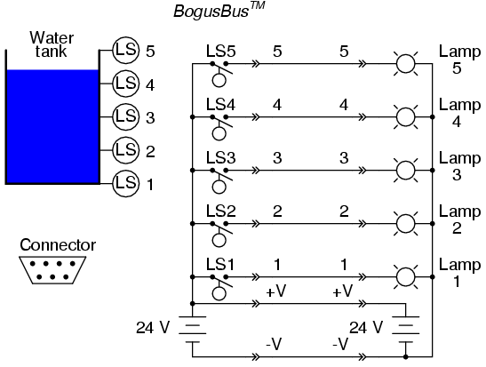
El cableado físico del BogusBus consta de siete cables entre el dispositivo transmisor (interruptores) y el dispositivo receptor (lámparas). El transmisor consta de todos los componentes y conexiones de cableado a la izquierda de los conectores más a la izquierda (los símbolos "-->>--"). Cada símbolo de conector representa un elemento complementario macho y hembra. El cableado del bus consta de siete cables entre los pares de conectores. Finalmente, el receptor y todo el cableado que lo constituye se encuentra a la derecha de los conectores del extremo derecho. Cinco de los cables de red (etiquetados del 1 al 5) transportan los datos, mientras que dos de esos cables (etiquetados +V y -V) proporcionan conexiones para fuentes de alimentación de CC. También existe un estándar para los conectores de 7 pines. La disposición de los pines es asimétrica para evitar una conexión "hacia atrás".
Para que los fabricantes pudieran recibir la impresionante certificación "BogusBus-compatible" en sus productos, tendrían que cumplir con las especificaciones establecidas por los diseñadores de BogusBus (probablemente otra empresa, que diseñó el autobús para una tarea específica y terminó comercializándolo para una amplia variedad de propósitos). Por ejemplo, todos los dispositivos deben poder utilizar la fuente de alimentación de 24 voltios CC de BogusBus: los contactos del interruptor en el transmisor deben estar clasificados para conmutar ese voltaje CC, las lámparas definitivamente deben estar clasificadas para ser alimentadas por ese voltaje y los conectores deben poder manejarlo todo. El cableado, por supuesto, debe cumplir con el mismo estándar: las lámparas 1 a 5, por ejemplo, deben conectarse a los pines apropiados para que cuando se cierre el LS4 del transmisor del fabricante XYZ, se encienda la lámpara 4 del receptor del fabricante ABC, y así sucesivamente. Dado que tanto el transmisor como el receptor contienen fuentes de alimentación de CC con una potencia de salida de 24 voltios, todas las combinaciones de transmisor/receptor (de todos los fabricantes certificados)debetener fuentes de alimentación que puedan conectarse de forma segura en paralelo. Considere lo que podría suceder si el fabricante XYZ fabricara un transmisor con el lado negativo (-) de su fuente de alimentación de 24 VCC conectado a tierra y el fabricante ABC fabricara un receptor con el lado positivo (+) de su fuente de alimentación de 24 VCC conectado a tierra. Si ambas conexiones a tierra son relativamente "sólidas" (es decir, una baja resistencia entre ellas, como podría ser el caso si las dos conexiones a tierra estuvieran hechas en la estructura metálica de un edificio industrial), ¡las dos fuentes de alimentación se cortocircuitarían entre sí!
BogusBus, por supuesto, es un ejemplo completamente hipotético y muy poco práctico de red digital. Tiene una resolución de datos increíblemente pobre, requiere mucho cableado para conectar dispositivos y se comunica en una sola dirección (del transmisor al receptor). Sin embargo, es suficiente como ejemplo tutorial de lo que es una red y algunas de las consideraciones asociadas con la selección y operación de la red.
Hay muchos tipos de autobuses y redes con los que te puedes encontrar en tu profesión. Cada uno tiene sus propias aplicaciones, ventajas y desventajas. Vale la pena asociarse con alguna de las "sopas de letras" que se utilizan para etiquetar los distintos diseños:
Short-distance busses
PC/ATBus utilizado en las primeras computadoras compatibles con IBM para conectar dispositivos periféricos como unidades de disco y tarjetas de sonido a la placa base de la computadora.
PCIOtro bus utilizado en ordenadores personales, pero no limitado a los compatibles con IBM. Mucho más rápido que PC/AT. Velocidad de transferencia de datos típica de 100 Mbytes/segundo (32 bits) y 200 Mbytes/segundo (64 bits).
PCMCIAUn bus diseñado para conectar periféricos a computadoras portátiles y personales del tamaño de una notebook. Tiene una "huella" física muy pequeña, pero es considerablemente más lento que otros buses de PC populares.
VMEUn bus de alto rendimiento (codiseñado por Motorola y basado en el estándar Versa-Bus anterior de Motorola) para construir computadoras industriales y militares versátiles, donde se pueden conectar múltiples tarjetas de memoria, periféricos e incluso microprocesadores a un "bastidor" pasivo o "jaula de tarjetas" para facilitar diseños de sistemas personalizados. Velocidad de transferencia de datos típica de 50 Mbytes/segundo (64 bits de ancho).
VXIEn realidad, una expansión del bus VME, VXI (VME eXtension for Instrumentation) incluye el bus VME estándar junto con conectores para señales analógicas entre tarjetas en el rack.
S-100A veces llamado bus Altair, este estándar de bus fue el producto de una conferencia en 1976, destinada a servir como interfaz para el chip del microprocesador Intel 8080. Similar en filosofía al VME, donde se pueden conectar múltiples tarjetas de función a un "bastidor" pasivo, facilitando la construcción de sistemas personalizados.
MC6800El equivalente de Motorola del bus S-100 centrado en Intel, diseñado para conectar dispositivos periféricos al popular chip de microprocesador Motorola 6800.
STDRepresentaFácil de diseñar, y es otro "rack" pasivo similar al bus PC/AT, y se adapta bien a diseños basados en hardware compatible con IBM. Diseñado por Pro-Log, tiene 8 bits de ancho (paralelo) y admite tarjetas de circuito relativamente pequeñas (4,5 x 6,5 pulgadas).
Multibus I y IIOtro bus destinado al diseño flexible de sistemas informáticos personalizados, diseñado por Intel. 16 bits de ancho (paralelo).
PCI compactoUna adaptación industrial del estándar PCI de computadora personal, diseñada como una alternativa de mayor rendimiento al antiguo bus VME. A una velocidad de reloj de bus de 66 MHz, las velocidades de transferencia de datos son de 200 Mbytes/segundo (32 bits) o 400 Mbytes/seg (64 bits).
MicrocanalOtro bus más, este diseñado por IBM para su desafortunada serie de computadoras PS/2, destinado a la interconexión de placas base de PC con dispositivos periféricos.
IDEBus utilizado principalmente para conectar unidades de disco duro de computadoras personales con las tarjetas periféricas apropiadas. Ampliamente utilizado en las computadoras personales actuales para interconectar discos duros y unidades de CD-ROM.
SCSIUn bus alternativo (técnicamente superior al IDE) utilizado para unidades de disco de computadoras personales. SCSI significaInterfaz de sistema informático pequeño. Se utiliza en algunas PC compatibles con IBM, así como en Macintosh (Apple) y en muchas computadoras empresariales mini y mainframe. Se utiliza para interconectar discos duros, unidades de CD-ROM, unidades de disquete, impresoras, escáneres, módems y una gran cantidad de otros dispositivos periféricos. Velocidades de hasta 1,5 Mbytes por segundo para el estándar original.
GPIB (IEEE 488) Bus de interfaz de uso general, también conocido como HPIB o IEEE 488, que estaba destinado a la interconexión de equipos de prueba electrónicos como osciloscopios y multímetros con computadoras personales. "Ruta" de dirección/datos de 8 bits de ancho con 8 líneas adicionales para control de comunicaciones.
Paralelo centronicsAmpliamente utilizado en computadoras personales para interconectar dispositivos de impresora y trazador. A veces se utiliza para interactuar con otros dispositivos periféricos, como unidades de disco y de cinta externas ZIP (disquete de 100 Mbytes).
USB Autobús serie universal, que está destinado a interconectar muchos dispositivos periféricos externos (como teclados, módems, ratones, etc.) a computadoras personales. Utilizado durante mucho tiempo en PC Macintosh, ahora se está instalando como equipo nuevo en máquinas compatibles con IBM.
FireWire (IEEE 1394)Una red serial de alta velocidad capaz de operar a 100, 200 o 400 Mbps con características versátiles como "intercambio en caliente" (agregar o quitar dispositivos con el encendido) y topología flexible. Diseñado para interfaz de computadora personal de alto rendimiento.
bluetoothUna red de comunicaciones por radio diseñada para la conexión de dispositivos informáticos en la oficina. Disposiciones para la seguridad de los datos diseñadas en este estándar de red.
Extended-distance networks
20 mA current loopNo debe confundirse con el estándar analógico de 4-20 mA de instrumentación común; se trata de una red de comunicaciones digitales basada en la interrupción de un bucle de corriente de 20 mA (o, a veces, 60 mA) para representar datos binarios. Aunque la baja impedancia proporciona una buena inmunidad al ruido, es susceptible a fallos de cableado (como roturas) que harían fallar toda la red.
RS-232CLa red serial más común utilizada en sistemas informáticos, a menudo utilizada para conectar dispositivos periféricos como impresoras y ratones a una computadora personal. Limitado en velocidad y distancia (normalmente 45 pies y 20 kbps, aunque se pueden ejecutar velocidades más altas con distancias más cortas). He podido ejecutar RS-232 de manera confiable a velocidades superiores a 100 kbps, ¡pero esto estaba usando un cable de solo 6 pies de largo! RS-232C a menudo se denomina simplemente RS-232 (sin "C").
RS-422A/RS-485Dos redes seriales diseñadas para superar algunas de las limitaciones de distancia y versatilidad del RS-232C. Se utiliza ampliamente en la industria para conectar dispositivos en serie en entornos de plantas eléctricamente "ruidosos". Limitaciones de distancia y velocidad mucho mayores que RS-232C, generalmente más de media milla y a velocidades cercanas a los 10 Mbps.
Ethernet (IEEE 802.3)Una red de alta velocidad que conecta computadoras y algunos tipos de dispositivos periféricos. Ethernet "normal" funciona a una velocidad de 10 millones de bits/segundo y Ethernet "rápido" funciona a 100 millones de bits/segundo. La Ethernet más lenta (10 Mbps) se ha implementado de diversos modos en cables de cobre (coaxial grueso = "10BASE5", coaxial delgado = "10BASE2", par trenzado = "10BASE-T"), radio y fibra óptica ("10BASE-F"). Fast Ethernet también se ha implementado en algunos medios diferentes (par trenzado, 2 pares = 100BASE-TX; par trenzado, 4 pares = 100BASE-T4; fibra óptica = 100BASE-FX).
Anillo simbólicoOtra red de alta velocidad que conecta dispositivos informáticos entre sí, utilizando una filosofía de comunicación muy diferente a la de Ethernet, lo que permite tiempos de respuesta más precisos de los dispositivos de red individuales y una mayor inmunidad a daños en el cableado de la red.
FDDIUna red de muy alta velocidad implementada exclusivamente sobre cableado de fibra óptica.
Modbus/Modbus PlusImplementado originalmente por Modicon Corporation, un gran fabricante de controladores lógicos programables (PLC) para vincular bastidores de E/S (entrada/salida) remotas con un procesador PLC. Sigue siendo bastante popular.
ProfibusImplementado originalmente por la corporación Siemens, otro gran fabricante de equipos PLC.
Bus de campo de la FundaciónUn bus de alto rendimiento diseñado expresamente para permitir que múltiples instrumentos de proceso (transmisores, controladores, posicionadores de válvulas) se comuniquen con las computadoras host y entre sí. En última instancia, puede desplazar la señal analógica de 4-20 mA como medio estándar para interconectar la instrumentación de control de procesos en el futuro.
Data flow
Los buses y las redes están diseñados para permitir que se produzca la comunicación entre dispositivos individuales que están interconectados. El flujo de información o datos entre nodos puede adoptar diversas formas:
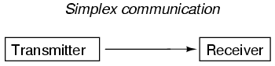
Con la comunicación simplex, todo el flujo de datos es unidireccional: desde el transmisor designado al receptor designado. BogusBus es un ejemplo de comunicación simplex, donde el transmisor envía información a la ubicación de monitoreo remoto, pero nunca se envía información al tanque de agua. Si todo lo que queremos hacer es enviar información unidireccional, entonces simplex está bien. Sin embargo, la mayoría de las aplicaciones exigen más:
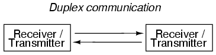
Con la comunicación dúplex, el flujo de información es bidireccional para cada dispositivo. El dúplex se puede dividir en dos subcategorías:
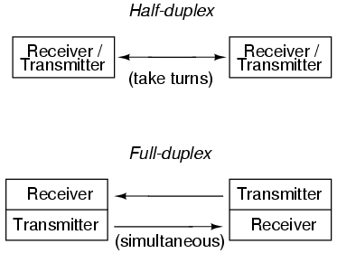
La comunicación semidúplex puede compararse con dos latas en los extremos de una sola cuerda tensa: cualquiera de ellas puede usarse para transmitir o recibir, pero no al mismo tiempo. La comunicación full-duplex se parece más a un verdadero teléfono, donde dos personas pueden hablar al mismo tiempo y escucharse simultáneamente, el micrófono de un teléfono transmite al auricular del otro, y viceversa. El modo full-duplex suele facilitarse mediante el uso de dos canales o redes independientes, con un conjunto individual de cables para cada dirección de comunicación. A veces se logra mediante ondas portadoras de múltiples frecuencias, especialmente en enlaces de radio, donde se reserva una frecuencia para cada dirección de comunicación.
Electrical signal types
Con BogusBus, nuestras señales eran muy simples y directas: cada cable de señal (del 1 al 5) transportaba un solo bit de datos digitales, 0 voltios representaban "apagado" y 24 voltios CC representaban "encendido". Debido a que todos los bits llegaron a su destino simultáneamente, llamaríamos a BogusBus unparalelotecnología de red. Si tuviéramos que mejorar el rendimiento de BogusBus agregando codificación binaria (al extremo del transmisor) y decodificación (al extremo del receptor), de modo que estuvieran disponibles más pasos de resolución con menos cables, seguiría siendo una red paralela. Sin embargo, si agregáramos un convertidor paralelo a serie en el extremo del transmisor y un convertidor de serie a paralelo en el extremo del receptor, tendríamos algo bastante diferente.
Es principalmente con el uso de la tecnología en serie que nos vemos obligados a inventar formas inteligentes de transmitir bits de datos. Debido a que los datos en serie requieren que enviemos todos los bits de datos a través del mismo canal de cableado desde el transmisor al receptor, se necesita una señal de frecuencia potencialmente alta en el cableado de la red. Considere la siguiente ilustración: un sistema BogusBus modificado comunica datos digitales en paralelo, en forma codificada en binario. En lugar de 5 bits discretos como el BogusBus original, enviamos 8 bits del transmisor al receptor. El convertidor A/D en el lado del transmisor genera una nueva salida cada segundo. Eso hace que se envíen 8 bits por segundo de datos al receptor. A modo de ilustración, digamos que el transmisor rebota entre una salida de 10101010 y 10101011 en cada actualización (una vez por segundo):
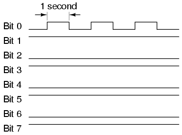
Dado que solo cambia el bit menos significativo (Bit 1), la frecuencia en ese cable (a tierra) es solo 1/2 Hertz. De hecho, no importa qué números genere el convertidor A/D entre actualizaciones, la frecuencia en cualquier cable en esta red BogusBus modificada no puede exceder 1/2 Hertz, porque así de rápido el A/D actualiza su salida digital. 1/2 Hertz es bastante lento y no debería presentar problemas para el cableado de nuestra red.
Por otro lado, si utilizamos una red serie de 8 bits, todos los bits de datos deben aparecer en un único canal en secuencia. Y estos bits deben ser emitidos por el transmisor dentro del período de 1 segundo entre las actualizaciones del convertidor A/D. Por lo tanto, la salida digital alterna de 10101010 y 10101011 (una vez por segundo) se vería así:
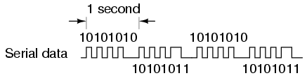
La frecuencia de nuestra señal BogusBus es ahora de aproximadamente 4 Hercios en lugar de 1/2 Hercios, ¡un aumento ocho veces mayor! Si bien 4 Hertz sigue siendo bastante lento y no constituye un problema de ingeniería, debería poder apreciar lo que podría suceder si estuviéramos transmitiendo 32 o 64 bits de datos por actualización, junto con los otros bits necesarios para la verificación de paridad y la sincronización de la señal, ¡a una velocidad de actualización de miles de veces por segundo! Las frecuencias de la red de datos en serie comienzan a entrar en el rango de radio y cables simples comienzan a actuar como antenas, pares de cables como líneas de transmisión, con todas sus peculiaridades asociadas debido a las reactancias inductivas y capacitivas.
Lo que es peor, las señales que intentamos comunicar a lo largo de una red en serie tienen forma de onda cuadrada y son bits binarios de información. Las ondas cuadradas son cosas peculiares, siendo matemáticamente equivalentes a una serie infinita de ondas sinusoidales de amplitud decreciente y frecuencia creciente. Una simple onda cuadrada a 10 kHz en realidad es "vista" por la capacitancia y la inductancia de la red como una serie de múltiples frecuencias de onda sinusoidal que se extienden hasta cientos de kHz con amplitudes significativas. Lo que recibimos en el otro extremo de una larga red de 2 conductores ya no parecerá una onda cuadrada limpia, ¡incluso en las mejores condiciones!
Cuando los ingenieros hablan de redancho de banda, se refieren al límite de frecuencia práctico de un medio de red. En la comunicación en serie, el ancho de banda es un producto del volumen de datos (bits binarios por "palabra" transmitida) y la velocidad de los datos ("palabras" por segundo). La medida estándar del ancho de banda de la red es bits por segundo, obps. Una unidad obsoleta de ancho de banda conocida comobaudiosA veces se equipara falsamente con bits por segundo, pero en realidad es la medida decambios de nivel de señalpor segundo. Muchos estándares de redes en serie utilizan múltiples cambios de nivel de voltaje o corriente para representar un solo bit, por lo que para estas aplicaciones, bps y baudios no son equivalentes.
El diseño general de BogusBus, donde todos los bits son voltajes referenciados a una conexión de "tierra" común, es la peor situación para la comunicación de datos de onda cuadrada de alta frecuencia. Todo funcionará bien para distancias cortas, donde los efectos inductivos y capacitivos se pueden mantener al mínimo, pero para distancias largas este método seguramente resultará problemático:
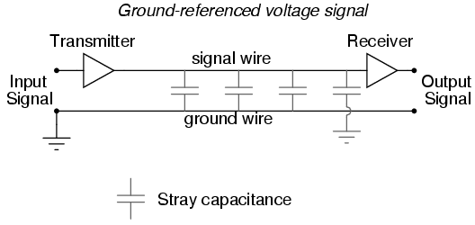
Una alternativa sólida al método de señal de tierra común es eldiferencialMétodo de voltaje, donde cada bit está representado por la diferencia de voltaje entre un par de cables aislados a tierra, en lugar de un voltaje entre un cable y una tierra común. Esto tiende a limitar los efectos capacitivos e inductivos impuestos a cada señal y la tendencia de las señales a corromperse debido a interferencias eléctricas externas, mejorando así significativamente la distancia práctica de una red en serie:
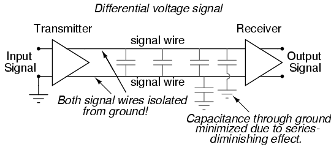
Los símbolos del amplificador triangular representanamplificadores diferenciales, que emite una señal de voltaje entre dos cables, ninguno de los cuales es eléctricamente común con tierra. Habiendo eliminado cualquier relación entre la señal de voltaje y tierra, la única capacitancia significativa impuesta al voltaje de la señal es la que existe entre los dos cables de señal. La capacitancia entre un cable de señal y un conductor conectado a tierra tiene mucho menos efecto, porque la ruta capacitiva entre los dos cables de señal a través de una conexión a tierra es de dos capacitancias en serie (desde el cable de señal #1 a tierra, luego desde tierra al cable de señal #2), y los valores de capacitancia en serie son siempre menores que cualquiera de las capacitancias individuales. Además, cualquier voltaje de "ruido" inducido entre los cables de señal y tierra por una fuente externa será ignorado, porque ese voltaje de ruido probablemente será inducido enamboscables de señal en igual medida, y el amplificador receptor solo responde a ladiferencialvoltaje entre los dos cables de señal, en lugar del voltaje entre cualquiera de ellos y tierra.
RS-232C es un excelente ejemplo de una red serial con referencia a tierra, mientras que RS-422A es un excelente ejemplo de una red serial de voltaje diferencial. RS-232C encuentra una aplicación popular en entornos de oficina donde hay poca interferencia eléctrica y las distancias de cableado son cortas. RS-422A se usa más ampliamente en aplicaciones industriales donde existen distancias de cableado más largas y un mayor potencial de interferencia eléctrica del cableado de alimentación de CA.
Sin embargo, una gran parte del problema con las señales de redes digitales es la naturaleza de onda cuadrada de dichos voltajes, como se mencionó anteriormente. Si pudiéramos evitar las ondas cuadradas por completo, podríamos evitar muchas de sus dificultades inherentes en redes largas y de alta frecuencia. Una forma de hacer esto esmodularuna señal de voltaje de onda sinusoidal con nuestros datos digitales. "Modulación" significa que la magnitud de una señal tiene control sobre algún aspecto de otra señal. La tecnología de radio ha incorporado la modulación durante décadas, al permitir que una señal de voltaje de audiofrecuencia controle la amplitud (AM) o la frecuencia (FM) de un voltaje "portador" de frecuencia mucho más alta, que luego se envía a la antena para su transmisión. La técnica de modulación de frecuencia (FM) ha encontrado más uso en redes digitales que la modulación de amplitud (AM), excepto que se la conoce como manipulación por desplazamiento de frecuencia (FSK). Con FSK simple, se utilizan ondas sinusoidales de dos frecuencias distintas para representar los dos estados binarios, 1 y 0:
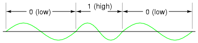
Debido a los problemas prácticos de conseguir que las ondas sinusoidales de baja/alta frecuencia comiencen y terminen en los puntos de cruce por cero para cualquier combinación dada de 0 y 1, a veces se utiliza una variación de FSK llamada FSK de fase continua, donde las ondas consecutivascombinaciónde una frecuencia baja/alta representa un estado binario y la combinación de una frecuencia alta/baja representa el otro. Esto también crea una situación en la que cada bit, ya sea 0 o 1, tarda exactamente la misma cantidad de tiempo en transmitirse a lo largo de la red:
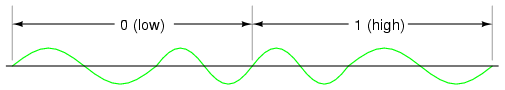
Con voltajes de señal de onda sinusoidal, muchos de los problemas encontrados con las señales digitales de onda cuadrada se minimizan, aunque los circuitos necesarios para modular (y demodular) las señales de la red son más complejos y costosos.
Optical data communication
Una alternativa moderna al envío de información digital (binaria) a través de señales de voltaje eléctrico es utilizar señales ópticas (luz). Las señales eléctricas de circuitos digitales (voltajes altos/bajos) se pueden convertir en señales ópticas discretas (luz o no luz) con LED o láseres de estado sólido. Asimismo, las señales luminosas se pueden convertir nuevamente en forma eléctrica mediante el uso de fotodiodos o fototransistores para su introducción en las entradas de los circuitos de compuerta.
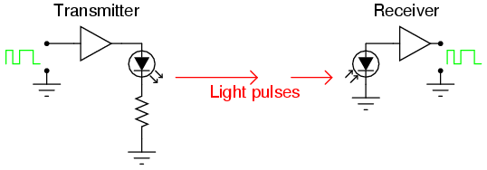
La transmisión de información digital en forma óptica se puede realizar al aire libre, simplemente apuntando un láser a un fotodetector a una distancia remota, pero la interferencia con el haz en forma de capas de inversión de temperatura, polvo, lluvia, niebla y otras obstrucciones pueden presentar importantes problemas de ingeniería:
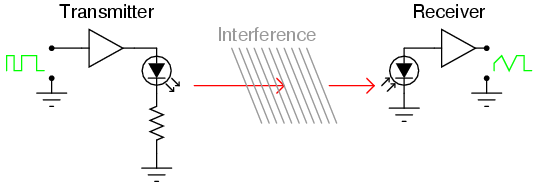
Una forma de evitar los problemas de la transmisión de datos ópticos al aire libre es enviar los pulsos de luz a través de una fibra de vidrio ultrapura. Las fibras de vidrio "conducirán" un haz de luz de la misma manera que un cable de cobre conducirá electrones, con la ventaja de evitar por completo todos los problemas asociados de inductancia, capacitancia e interferencias externas que afectan a las señales eléctricas. Las fibras ópticas mantienen el haz de luz contenido dentro del núcleo de la fibra mediante un fenómeno conocido como reflectancia interna total.
Una fibra óptica se compone de dos capas de vidrio ultrapuro, cada capa hecha de vidrio con un color ligeramente diferente.índice de refracción, o capacidad de "doblar" la luz. Con un tipo de vidrio colocado concéntricamente alrededor de un núcleo de vidrio central, la luz introducida en el núcleo central no puede escapar fuera de la fibra, sino que se limita a viajar dentro del núcleo:
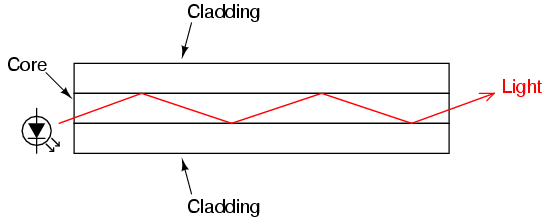
Estas capas de vidrio son muy delgadas; el "revestimiento" exterior suele ser de 125 micras (1 micra = 1 millonésima de metro, o 10-6metro) de diámetro. Esta delgadez confiere a la fibra una flexibilidad considerable. Para proteger la fibra del daño físico, generalmente se le aplica una fina capa de plástico, se coloca dentro de un tubo de plástico, se envuelve con fibras de kevlar para mayor resistencia a la tracción y se le aplica una funda exterior de plástico similar al aislamiento de un cable eléctrico. Al igual que los cables eléctricos, las fibras ópticas suelen agruparse dentro de la misma funda para formar un solo cable.
Las fibras ópticas superan el rendimiento de manejo de datos del cable de cobre en casi todos los aspectos. Son totalmente inmunes a las interferencias electromagnéticas y tienen anchos de banda muy elevados. Sin embargo, no están exentos de ciertas debilidades.
Una debilidad de la fibra óptica es un fenómeno conocido comomicrocontrol. Aquí es donde la fibra se dobla en un radio demasiado pequeño, lo que hace que la luz escape del núcleo interno a través del revestimiento:
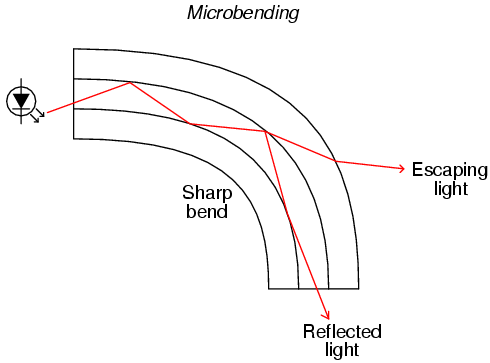
La microflexión no sólo conduce a una disminución de la intensidad de la señal debido a la pérdida de luz, sino que también constituye una debilidad de seguridad en el sentido de que un sensor de luz colocado intencionalmente en el exterior de una curva pronunciada podría interceptar los datos digitales transmitidos a través de la fibra.
Otro problema exclusivo de la fibra óptica es la distorsión de la señal debido a múltiples caminos de luz, omodos, teniendo diferentes distancias a lo largo de la fibra. Cuando una fuente emite luz, no todos los fotones (partículas de luz) viajan exactamente por el mismo camino. Este hecho es evidente en cualquier fuente de luz que no se ajuste a un haz recto, pero es cierto incluso en dispositivos como los láseres. Si el núcleo de la fibra óptica tiene un diámetro lo suficientemente grande, admitirá múltiples vías para que viajen los fotones, cada una de estas vías tendrá una longitud ligeramente diferente de un extremo de la fibra al otro. Este tipo de fibra óptica se llamamultimodofibra:
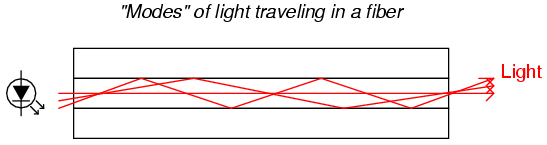
Un pulso de luz emitido por el LED que recorre un camino más corto a través de la fibra llegará al detector antes que los pulsos de luz que toman un camino más largo. El resultado es una distorsión de los bordes ascendentes y descendentes de la onda cuadrada, llamadaestiramiento del pulso. Este problema empeora a medida que aumenta la longitud total de la fibra:
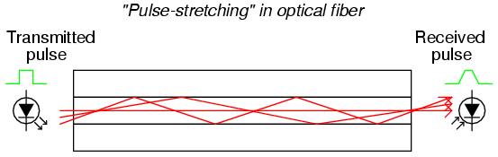
Sin embargo, si el núcleo de la fibra se hace lo suficientemente pequeño (alrededor de 5 micrones de diámetro), los modos de luz se restringen a una única vía con una longitud. La fibra diseñada para permitir un solo modo de luz se conoce comomonomodofibra. Debido a que la fibra monomodo evita el problema del estiramiento de pulsos experimentado en cables largos, es la fibra preferida para redes de larga distancia (varias millas o más). El inconveniente, por supuesto, es que con un solo modo de luz, las fibras monomodo no conducen tanta luz como las fibras multimodo. En distancias largas, esto exacerba la necesidad de unidades "repetidoras" para aumentar la potencia luminosa.
Network topology
Si queremos conectar dos dispositivos digitales a una red, tendríamos un tipo de red conocida como "punto a punto":
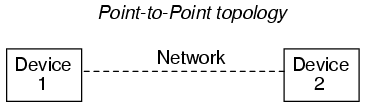
Para simplificar, el cableado de la red se simboliza como una única línea entre los dos dispositivos. En realidad, puede tratarse de un par de hilos trenzados, un cable coaxial, una fibra óptica o incluso un BogusBus de siete conductores. En este momento, nos estamos centrando simplemente en la "forma" de la red, técnicamente conocida como sutopología.
Si queremos incluir más dispositivos (a veces llamadosnodos) en esta red, tenemos varias opciones de configuración de red para elegir:
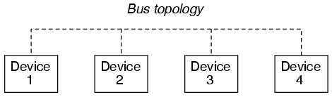
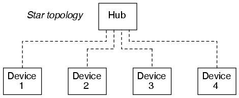
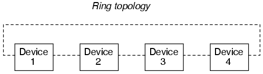
Muchos estándares de red dictan el tipo de topología que se utiliza, mientras que otros son más versátiles. Ethernet, por ejemplo, se implementa comúnmente en una topología de "bus", pero también se puede implementar en una topología de "estrella" o "anillo" con el equipo de interconexión adecuado. Otras redes, como RS-232C, son casi exclusivamente punto a punto; y Token Ring (como habrás adivinado) se implementa únicamente en una topología de anillo.
Las diferentes topologías tienen diferentes ventajas y desventajas asociadas:
Point-to-point
Obviamente, la única opción para dos nodos.
Bus
Muy sencillo de instalar y mantener. Los nodos se pueden agregar o quitar fácilmente con cambios mínimos de cableado. Por otra parte, la red de autobuses única debe gestionarallseñales de comunicación deallnodos. Esto se conoce comotransmisiónnetworking, y es análogo a un grupo de personas hablando entre sí a través de una única conexión telefónica, donde sólo una persona puede hablar a la vez (lo que limita las tasas de intercambio de datos) y todos pueden escuchar a los demás cuando hablan (lo que puede ser un problema de seguridad de los datos). Además, una rotura en el cableado del bus puede provocar que los nodos queden aislados en grupos.
Star
Con dispositivos conocidos como "puertas de enlace" en los puntos de ramificación de la red, se puede restringir el flujo de datos entre nodos, permitiendo la comunicación privada entre grupos específicos de nodos. Esto soluciona algunos de los problemas de velocidad y seguridad de la topología de bus simple. Sin embargo, esas ramas podrían fácilmente quedar aisladas del resto de la red "estrella" si una de las puertas de enlace fallara. También se puede implementar con "conmutadores" para conectar nodos individuales a una red más grande según demanda. talcambiadoLa red es similar al sistema telefónico estándar.
Ring
Esta topología proporciona la mejor confiabilidad con la menor cantidad de cableado. Dado que cada nodo tiene dos puntos de conexión al anillo, una sola rotura en cualquier parte del anillo no afecta la integridad de la red. Sin embargo, los dispositivos deben diseñarse teniendo en cuenta esta topología. Además, la red debe interrumpirse para instalar o eliminar nodos. Al igual que con la topología de bus, las redes en anillo sontransmisiónpor naturaleza.
Como se puede sospechar, se pueden combinar dos o más topologías de anillo para ofrecer "lo mejor de ambos mundos" en una aplicación particular. Muy a menudo, las redes industriales terminan de esta manera con el tiempo, simplemente porque ingenieros y técnicos unen múltiples redes para obtener acceso a la información en toda la planta.
Network protocols
Aparte de las cuestiones de la red física (tipos de señal y niveles de voltaje, distribución de pines de los conectores, cableado, topología, etc.), es necesario que exista una forma estandarizada en la que se arbitra la comunicación entre múltiples nodos en una red, incluso si es tan simple como un sistema punto a punto de dos nodos. Cuando un nodo "habla" en la red, está generando una señal en el cableado de la red, ya sean niveles de voltaje de CC altos y bajos, algún tipo de señal de onda portadora de CA modulada o incluso pulsos de luz en una fibra. Los nodos que "escuchan" simplemente miden la señal aplicada en la red (desde el nodo transmisor) y la monitorean pasivamente. Sin embargo, si dos o más nodos "hablan" al mismo tiempo, sus señales de salida pueden chocar (¡imagínese dos puertas lógicas tratando de aplicar voltajes de señal opuestos a una sola línea en un bus!), corrompiendo los datos transmitidos.
El método estandarizado mediante el cual los nodos pueden transmitir al bus o al cableado de la red se llamaprotocolo. Existen muchos protocolos diferentes para arbitrar el uso de una red común entre múltiples nodos, y aquí cubriré solo algunos. Sin embargo, es bueno ser consciente de estos pocos y comprender por qué algunos funcionan mejor para algunos propósitos que otros. Por lo general, un protocolo específico está asociado con un tipo de red estandarizado. Esto es simplemente otra "capa" del conjunto de estándares que se especifican bajo los títulos de varias redes.
La Organización Internacional de Normalización (ISO) ha especificado una arquitectura general de especificaciones de red en su modelo DIS7498 (aplicable a casi cualquier red digital). Este esquema, que consta de siete "capas", intenta categorizar todos los niveles de abstracción necesarios para comunicar datos digitales.
- Nivel 1: FísicoEspecifica detalles eléctricos y mecánicos de comunicación: tipo de cable, diseño de conector, tipos y niveles de señal.
- Nivel 2: enlace de datosDefine formatos de mensajes, cómo se deben abordar los datos y técnicas de detección/corrección de errores.
- Nivel 3: RedEstablece procedimientos para la encapsulación de datos en "paquetes" para su transmisión y recepción.
- Nivel 4: TransporteLa capa de transporte define, entre otras cosas, cómo se deben manejar los archivos de datos completos a través de una red.
- Nivel 5: SesiónOrganiza la transferencia de datos en términos de inicio y final de una transmisión específica. Análogo acontrol de trabajoen un sistema operativo de computadora multitarea.
- Nivel 6: PresentaciónIncluye definiciones para juegos de caracteres, control de terminales y comandos de gráficos para que los datos abstractos puedan codificarse y decodificarse fácilmente entre dispositivos en comunicación.
- Nivel 7: AplicaciónLos estándares de usuario final para generar y/o interpretar datos comunicados en su forma final. En otras palabras, los programas informáticos reales que utilizan los datos comunicados.
Algunos protocolos de red establecidos solo cubren uno o algunos de los niveles DIS7498. Por ejemplo, el protocolo de comunicaciones serie RS-232C, ampliamente utilizado, en realidad sólo aborda la primera capa ("física") de este modelo de siete capas. Otros protocolos, como el sistema cliente/servidor gráfico X-windows desarrollado en el MIT para sistemas informáticos distribuidos con interfaz gráfica de usuario, cubren las siete capas.
Diferentes protocolos pueden utilizar el mismo estándar de capa física. Un ejemplo de esto son los protocolos RS-422A y RS-485, los cuales utilizan el mismo circuito transmisor y receptor de voltaje diferencial, usando los mismos niveles de voltaje para indicar unos y ceros binarios. A nivel físico, estos dos protocolos de comunicación son idénticos. Sin embargo, en un nivel más abstracto, los protocolos son diferentes: RS-422A es sólo punto a punto, mientras que RS-485 admite una topología de bus."multigota"con hasta 32 nodos direccionables.
Quizás el tipo de protocolo más simple es aquel en el que hay un solo transmisor y todos los demás nodos son meros receptores. Tal es el caso de BogusBus, donde un solo transmisor genera las señales de voltaje impresas en el cableado de la red, y una o más unidades receptoras (con 5 lámparas cada una) se encienden de acuerdo con la salida del transmisor. Este es siempre el caso de una red simplex: ¡solo hay un hablante y todos los demás escuchan!
Cuando tenemos múltiples nodos transmisores, debemos orquestar sus transmisiones de tal manera que no entren en conflicto entre sí. No se debe permitir que los nodos hablen cuando otro nodo está hablando, por lo que le damos a cada nodo la capacidad de "escuchar" y abstenerse de hablar hasta que la red esté en silencio. Este enfoque básico se llamaAcceso múltiple con detección de operador(CSMA), y existen algunas variaciones sobre este tema. Tenga en cuenta que CSMA no es un protocolo estandarizado en sí mismo, sino más bien una metodología que siguen ciertos protocolos.
Una variación es simplemente dejar que cualquier nodo comience a hablar tan pronto como la red esté en silencio. Esto es análogo a un grupo de personas reunidas en una mesa redonda: cualquiera tiene la capacidad de empezar a hablar, siempre y cuando no interrumpa a nadie más. Tan pronto como la última persona deje de hablar, comenzará la siguiente persona que esté esperando para hablar. Entonces, ¿qué sucede cuando dos o más personas empiezan a hablar a la vez? En una red, la transmisión simultánea de dos o más nodos se denominacolisión. Con CSMA/CD (CSMA/detección de colisiones), los nodos que colisionan simplemente se reinician con un circuito temporizador de retardo aleatorio, y el primero en terminar su retardo intenta hablar de nuevo. Este es el protocolo básico para la popular red Ethernet.
Otra variación de CSMA es CSMA/BA (CSMA/arbitraje bit a bit), donde los nodos en colisión se refieren a números de prioridad preestablecidos que dictan cuál tiene permiso para hablar primero. En otras palabras, cada nodo tiene un "rango" que resuelve cualquier disputa sobre quién comienza a hablar primero después de que ocurre una colisión, muy parecido a un grupo de personas donde se mezclan dignatarios y ciudadanos comunes. Si ocurre una colisión, generalmente se permite que el dignatario hable primero y la persona común espera después.
En cualquiera de los dos ejemplos anteriores (CSMA/CD y CSMA/BA), asumimos que cualquier nodo podría iniciar una conversación siempre que la red estuviera en silencio. Esto se conoce como el modo de comunicación "no solicitado". Existe una variación llamada modo "solicitado" para CSMA/CD o CSMA/BA donde solo se permite que la transmisión inicial ocurra cuando un nodo maestro designado solicita (solicita) una respuesta. La detección de colisiones (CD) o el arbitraje bit a bit (BA) se aplican solo al arbitraje posterior a la colisión, ya que varios nodos responden a la solicitud del dispositivo maestro.
Una estrategia completamente diferente para la comunicación de nodos es laMaestro/Esclavoprotocolo, donde un único dispositivo maestro asigna intervalos de tiempo para que todos los demás nodos de la red transmitan y programa estos intervalos de tiempo para que varios nodosno puedochocar. El dispositivo maestro se dirige a cada nodo por su nombre, uno a la vez, permitiendo que ese nodo hable durante un cierto período de tiempo. Cuando termina, el maestro se dirige al siguiente nodo, y así sucesivamente.
Otra estrategia más es laPaso de tokensprotocolo, donde cada nodo tiene un turno para hablar (uno a la vez) y luego otorga permiso para que el siguiente nodo hable cuando termine. El permiso para hablar se transmite de nodo a nodo a medida que cada uno entrega el "token" al siguiente en orden secuencial. El token en sí no es algo físico: es una serie de 1 y 0 binarios transmitidos en la red, que llevan una dirección específica del siguiente nodo al que se le permite hablar. Aunque el protocolo de paso de tokens suele asociarse con redes de topología en anillo, no está restringido a ninguna topología en particular. Y cuando este protocolo se implementa en una red en anillo, la secuencia de paso del token no tiene por qué seguir la secuencia de conexión física del anillo.
Al igual que con las topologías, se pueden unir múltiples protocolos en diferentes segmentos de una red heterogénea para obtener el máximo beneficio. Por ejemplo, una red Maestro/Esclavo dedicada que conecta instrumentos entre sí en la planta de fabricación puede vincularse a través de un dispositivo de puerta de enlace a una red Ethernet que conecta múltiples estaciones de trabajo con computadoras de escritorio, actuando una de esas estaciones de trabajo con computadoras como puerta de enlace para vincular los datos a una red de fibra FDDI con la computadora central de la planta. Cada tipo de red, topología y protocolo satisface mejor diferentes necesidades y aplicaciones, pero a través de dispositivos de puerta de enlace, todos pueden compartir los mismos datos.
También es posible combinar múltiples estrategias de protocolo en un nuevo híbrido dentro de un único tipo de red. Tal es el caso de Foundation Fieldbus, que combina Maestro/Esclavo con una forma de transferencia de tokens. Un dispositivo Link Active Scheduler (LAS) envía comandos programados "Compel Data" (CD) para consultar los dispositivos esclavos en el Fieldbus para obtener información crítica en el tiempo. En este sentido, Fieldbus es un protocolo Maestro/Esclavo. Sin embargo, cuando hay tiempo entre consultas de CD, LAS envía "tokens" a cada uno de los otros dispositivos en el Fieldbus, uno a la vez, dándoles la oportunidad de transmitir cualquier dato no programado. Cuando esos dispositivos terminan de transmitir su información, devuelven el token al LAS. El LAS también busca nuevos dispositivos en el bus de campo con un mensaje de "Nodo de sonda" (PN), que se espera que produzca una "Respuesta de sonda" (PR) al LAS. Las respuestas de los dispositivos al LAS, ya sea mediante un mensaje PR o un token devuelto, dictan su posición en una base de datos de "Lista activa" que mantiene el LAS. El funcionamiento adecuado del dispositivo LAS es absolutamente fundamental para el funcionamiento del Fieldbus, por lo que existen disposiciones para el funcionamiento LAS redundante asignando el estado "Maestro de enlace" a algunos de los nodos, permitiéndoles convertirse en programadores activos de enlace alternativos si falla el LAS operativo.
Existen otros protocolos de comunicación de datos, pero estos son los más populares. Tuve la oportunidad de trabajar en un antiguo sistema de control industrial (alrededor de 1975) fabricado por Honeywell donde un dispositivo maestro llamadoDirector de Tráfico en Carreteras, o HTD, arbitraba todas las comunicaciones de la red. Lo que hizo interesante a esta red es que la señal enviada desde el HTD a todos los dispositivos esclavos para permitir la transmisión eranotcomunicados en el cableado de la red en sí, sino en conjuntos de cables de par trenzado individuales que conectan el HTD con cada dispositivo esclavo. Luego, los dispositivos en la red se dividieron en dos categorías: aquellos nodos conectados al HTD a los que se les permitió iniciar la transmisión, y aquellos nodos no conectados al HTD que solo podían transmitir en respuesta a una consulta enviada por uno de los nodos anteriores.Primitivo and lentoson los únicos adjetivos apropiados para este esquema de red de comunicación, pero funcionó adecuadamente para su época.
Practical considerations
Una consideración principal para las redes de control industrial, donde el monitoreo y control de los procesos de la vida real a menudo deben ocurrir rápidamente y en tiempos establecidos, es el tiempo máximo de comunicación garantizado de un nodo a otro. Si está controlando la posición de una válvula de refrigerante de un reactor nuclear con una red digital, debe poder garantizar que el nodo de la red de la válvula recibirá las señales de posicionamiento adecuadas de la computadora de control en el momento adecuado. Si no, ¡podrían pasar cosas muy malas!
La capacidad de una red para garantizar el "rendimiento" de datos se denominadeterminismo. Una red determinista tiene un retraso de tiempo máximo garantizado para la transferencia de datos de un nodo a otro, mientras que una red no determinista no. El ejemplo más destacado de una red no determinista es Ethernet, donde los nodos dependen de circuitos aleatorios de retardo de tiempo para restablecer y volver a intentar la transmisión después de una colisión. Dado que la transmisión de datos de un nodo podría retrasarse indefinidamente debido a una larga serie de reinicios y reintentos después de repetidas colisiones, no hay garantía de que sus datosalguna vezser enviado a la red. Sin embargo, siendo realistas, las probabilidades de que algo así suceda son tan astronómicamente grandes que es de poca preocupación práctica en una red con poca carga.
Otra consideración importante, especialmente para las redes de control industrial, es la tolerancia a fallos de la red: es decir, ¿qué tan susceptible es a fallos la señalización, la topología y/o el protocolo de una red en particular? Ya hemos discutido brevemente algunas de las cuestiones relacionadas con la topología, pero el protocolo afecta la confiabilidad de la misma manera. Por ejemplo, una red Maestro/Esclavo, si bien es extremadamente determinista (algo bueno para los controles críticos), depende completamente del nodo maestro para mantener todo funcionando (generalmente algo malo para los controles críticos). Si el nodo maestro falla por cualquier motivo, ninguno de los otros nodos podrá transmitir ningún dato, porque nunca recibirán los permisos de tiempo asignados para hacerlo y todo el sistema fallará.
Un problema similar rodea a los sistemas de paso de tokens: ¿qué sucede si el nodo que contiene el token fallara antes de pasarlo al siguiente nodo? Algunos sistemas de transferencia de tokens abordan esta posibilidad haciendo que algunos nodos designados generen un nuevo token si la red permanece en silencio durante demasiado tiempo. Esto funciona bien si un nodo que contiene el token muere, pero causa problemas si parte de una red queda en silencio porque se deshace una conexión de cable: la parte de la red que queda en silencio genera su propio token después de un tiempo, y básicamente te quedan dos redes más pequeñas con un token que se pasa por cada una de ellas para mantener la comunicación. Sin embargo, se produce un problema si esa conexión de cable se vuelve a conectar: esas dos redes segmentadas se unen nuevamente y ahora hay dos tokens pasando por una red, lo que provoca que las transmisiones de los nodos colisionen.
No existe una "red perfecta" para todas las aplicaciones. La tarea del ingeniero y técnico es conocer la aplicación y conocer el funcionamiento de la(s) red(es) disponible(s). Sólo entonces podrá hacerse realidad el diseño y el mantenimiento eficientes del sistema.
Lecciones en circuitos eléctricoscopyright (C) 2000-2023 Tony R. Kuphaldt, según los términos y condiciones delCC BY License.